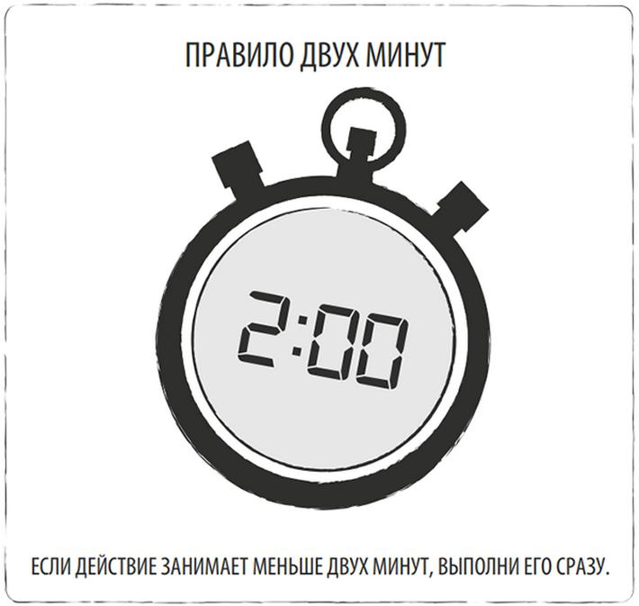

Признаюсь, люди, которые успевают сделать за двадцать четыре часа столько, сколько я делаю за неделю, восхищают меня. Не подумайте: я не поклонник подхода “отдохнем после смерти”, да и в трудолюбии мне еще очень далеко до какого-нибудь японца, которого свои считают немного лентяем.
Дело в другом: то, сколько времени у вас будет на отдых, зависит от того, как быстро и эффективно вы справитесь с основными задачами. Поэтому я решил выписать для себя несколько советов, которые действительно помогают на практике.
Нужно всего лишь научиться применять эти советы на практике, одновременно. Тогда и удастся почувствовать, как это — все успевать. В том числе и успевать отдыхать.

Чтение и просмотр новостей не приносит никакой пользы. Новости не информируют вас о том, что происходит в мире, они вводят вас в заблуждение и попутно награждают тоннами абсолютно ненужного информационного мусора, взамен забирая ваше время.
Это справедливо для телевизионных новостных передач, новостных сайтов и лент новостей в социальных сетях.
Помните: случаев, когда “неудобно” и кто-то “просит”, в вашей жизни может быть очень много. Нет никакого закона, согласно которому ваших времени и сил хватит на всех. Не хватит.
Надо бы сходить к ним, а то неудобно. Надо бы встретиться с ним, а то неудобно. Надо бы… человек же просит.
Вы в любом случае кого-нибудь “заденете” и вам будет “неудобно”. После этого все продолжат жить дальше. Трагедии не произойдет. У вас будет больше времени на важные дела и на то, чтобы быть с теми, кто вам действительно дорог. А Вселенная этого даже не заметит.
Подведем итог. Нет никакой магии, никаких суперспособностей и таинственных источников энергии. Секрет в том, чтобы правильно расставлять приоритеты и уделять полноценное внимание самому важному.
Вот подсказка со списком девяти советов, которыми мы решили пользоваться:
Бонус: и хватит уже читать все эти статьи про то, как повысить продуктивность! Просто идите и займитесь делом.